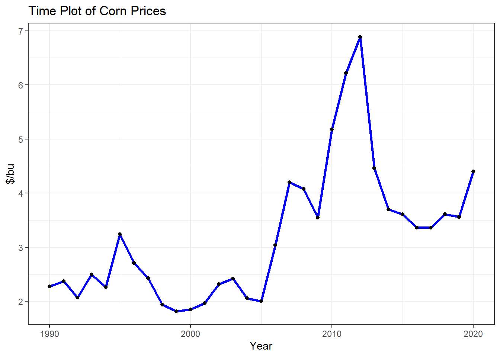
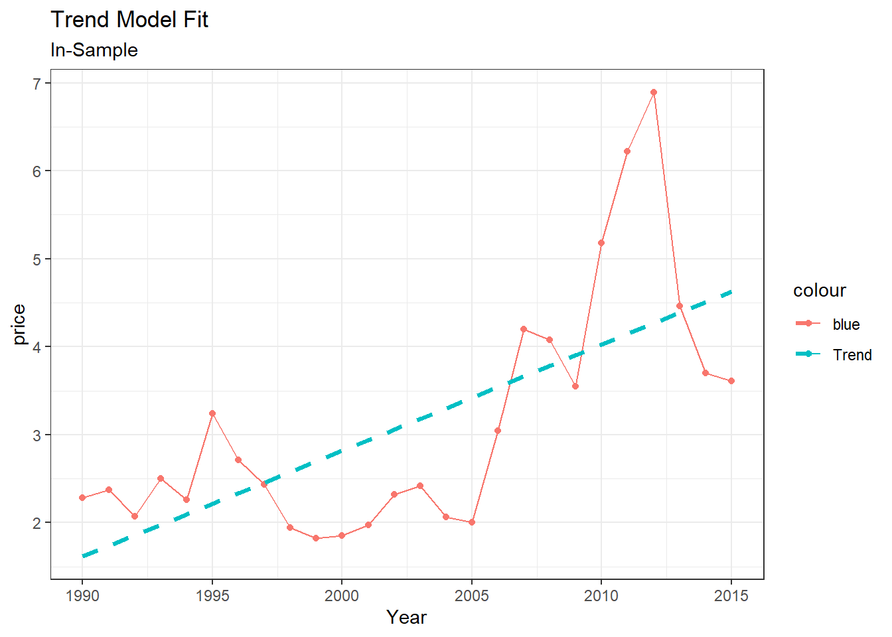
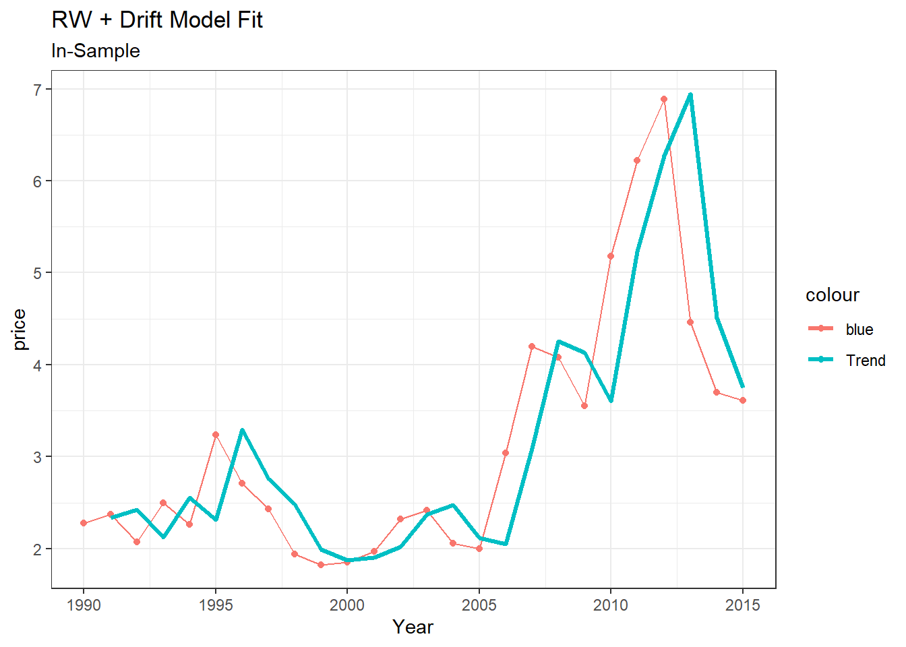
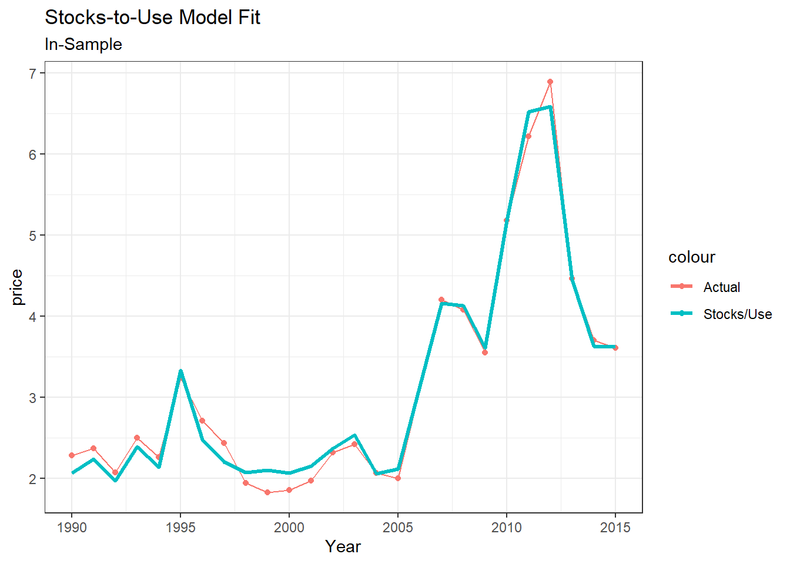
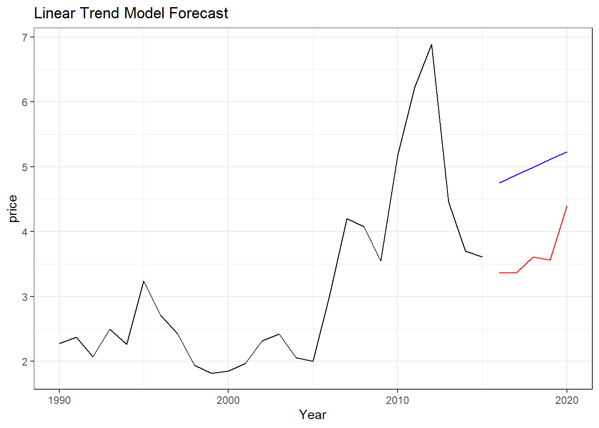
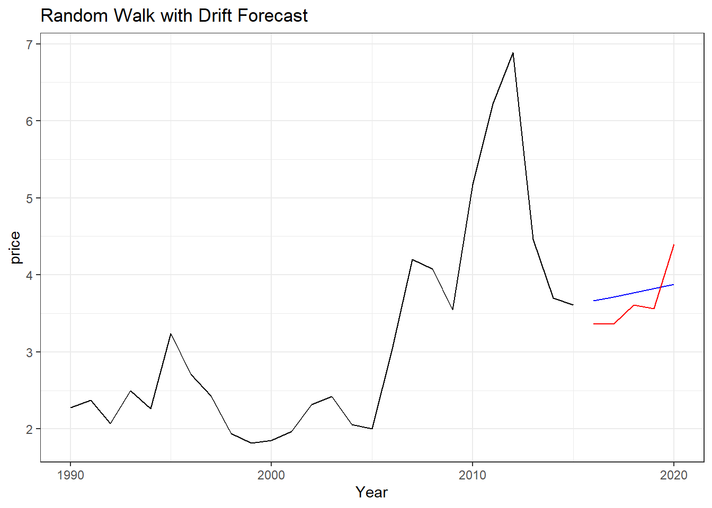
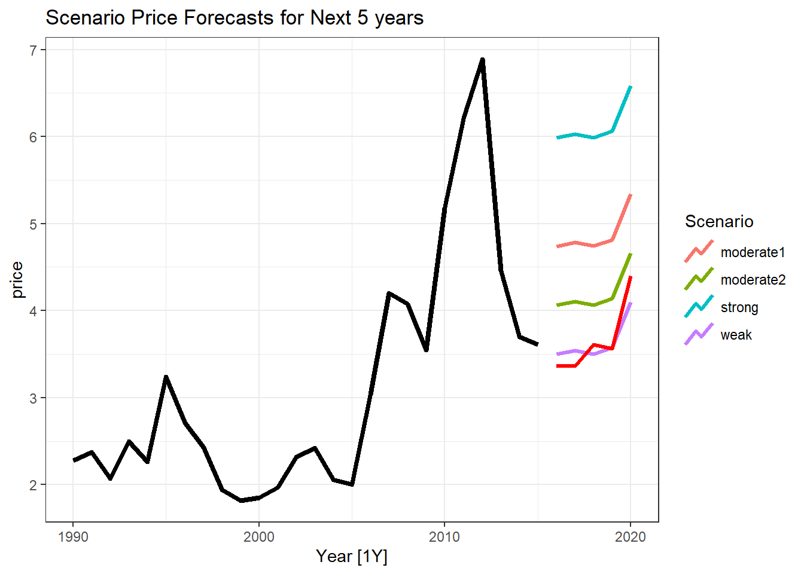

Module 7 Accuracy and Forecast Evaluations
In the preceding Modules, we focused much of our attention on exploring various forecasting models. We quickly saw that some models did a better job of fitting and predicting our data than others. To this point, our determination of the “best” models was entirely based on eyeballing the “goodness of fit” of the actual vs the forecasted data series.
In this module, we shift our focus to formally assessing our model’s forecasting performances. We will return to the Annual Corn Price series from earlier and statistically determine the most accurate forecasting model, both in- and out-of-sample.
7.1 Corn Data (Revisited)
As we did in Module 6, we can again read in the dataset with the Ending Stocks/Use. We leave it as practice for interested reader to duplicate the codes and manipulations in Sections 6.1.1 and 6.1.2.
For the purpose of the exercise, we will drop the observations for 2021. To refamiliarize ourselves with the data:
su.data2 <- su.data %>% filter_index(.~2020)
su.data2 %>%
autoplot(price, color = "blue", size = 1.15) +
geom_point() +
labs(title = "Time Plot of Corn Prices",
y = "$/bu",
x = "Year") +
theme_bw() From the plot, the price series appears to be increasing over time. From this pattern, a trend model could conceivably be a viable candidate for our forecasting.
7.2 Exploring the Forecasting models In-sample
To begin, we will subset our data into a training and test period. The test period will serve as our data validation window. That is, we will use it to understand how well our model performs “out of sample”.
We will use the last 5 years of data as the test period.
## # A tsibble: 6 x 4 [1Y]
## Year su price ratio
## <dbl> <dbl> <dbl> <dbl>
## 1 1990 0.196 2.28 0.0511
## 2 1991 0.139 2.37 0.0720
## 3 1992 0.249 2.07 0.0402
## 4 1993 0.112 2.5 0.0896
## 5 1994 0.166 2.26 0.0603
## 6 1995 0.0500 3.24 0.200# Reserve the last 5 years for the test set
test <- su.data2 %>% filter_index(2016~.)
test %>% head()## # A tsibble: 5 x 4 [1Y]
## Year su price ratio
## <dbl> <dbl> <dbl> <dbl>
## 1 2016 0.157 3.36 0.0639
## 2 2017 0.145 3.36 0.0691
## 3 2018 0.155 3.61 0.0643
## 4 2019 0.137 3.56 0.0728
## 5 2020 0.0744 4.4 0.1347.2.1 Method 1: Linear Trend
Let us first explore the forecasting method using a simple trend. Recall that we can achieve this using a time series linear model (OLS) and the TSLM function.
## Series: price
## Model: TSLM
##
## Residuals:
## Min 1Q Median 3Q Max
## -1.42357 -0.79770 0.02143 0.53242 2.62181
##
## Coefficients:
## Estimate Std. Error t value Pr(>|t|)
## (Intercept) 1.49302 0.41302 3.615 0.001385 **
## trend() 0.12066 0.02674 4.512 0.000144 ***
## ---
## Signif. codes:
## 0 '***' 0.001 '**' 0.01 '*' 0.05 '.' 0.1 ' ' 1
##
## Residual standard error: 1.023 on 24 degrees of freedom
## Multiple R-squared: 0.4589, Adjusted R-squared: 0.4364
## F-statistic: 20.36 on 1 and 24 DF, p-value: 0.00014377From the regression results, the linear trend appears to be statistically significant in explaining the observed prices. At this point, it would also prove useful to produce the plot of the fitted and actual values.
mod1.trend %>% augment() %>%
ggplot(aes(y = price, x = Year,
colour = "blue")) +
geom_line() +
geom_point() +
geom_line(aes(y = .fitted,
colour = "Trend"),
size = 1.2,
lty = "dashed") +
labs(title = "Trend Model Fit",
subtitle = "In-Sample") +
theme_bw()
7.2.2 Method 2: Naive Model (with drift)
Let us assume that we have no idea of where the prices might go next. Under that condition, we could explore a naive forecasting approach. Additionally, since we noticed a pronounced trend in the series, we will account for that by including a drift term.
We will use the code chunks below to accomplish this.
Here is a plot of the in sample fit.
mod2.drift %>% augment() %>%
ggplot(aes(y = price, x = Year,
colour = "blue")) +
geom_line() +
geom_point() +
geom_line(aes(y = .fitted,
colour = "Trend"),
size = 1.2) +
labs(title = "RW + Drift Model Fit",
subtitle = "In-Sample") +
theme_bw()## Warning: Removed 1 row containing missing values
## (`geom_line()`).
7.2.3 Method 3: Using Stocks-to-Use Approach
In the last module, we explored the concept of accounting for structural breaks in the data. In particular, we split the data into different regimes and forecasted prices accordingly. We will utilize the same approach and use OLS regressions to help in the forecasting process.
Our first step requires that we create market conditions dummy variables. The process is detailed in Module 6.
weak <- c(2009, 2014:2015)
mod2 <- c(2007:2008, 2013)
mod1 <- 2010
strong <- 2011:2012
#Drop 2006, and all years after 2015.
subdata <- su.data %>% filter(Year %in%
c(1990:2005, 2007:2015)) %>% mutate(weak = ifelse(Year %in% weak, 1,0),
mod2 = ifelse(Year %in% mod2, 1,0),
mod1 = ifelse(Year %in% mod1, 1,0),
strong = ifelse(Year %in% strong, 1,0))
subdata %>% head()## # A tsibble: 6 x 8 [1Y]
## Year su price ratio weak mod2 mod1 strong
## <dbl> <dbl> <dbl> <dbl> <dbl> <dbl> <dbl> <dbl>
## 1 1990 0.196 2.28 0.0511 0 0 0 0
## 2 1991 0.139 2.37 0.0720 0 0 0 0
## 3 1992 0.249 2.07 0.0402 0 0 0 0
## 4 1993 0.112 2.5 0.0896 0 0 0 0
## 5 1994 0.166 2.26 0.0603 0 0 0 0
## 6 1995 0.0500 3.24 0.200 0 0 0 0Now to perform the relevant regressions:
mod3.stock <- subdata %>% model(
TSLM(price ~ ratio + weak + mod2 + mod1 + strong)
)
mod3.stock %>% report()## Series: price
## Model: TSLM
##
## Residuals:
## Min 1Q Median 3Q Max
## -0.2994 -0.1125 0.0000 0.1118 0.2994
##
## Coefficients:
## Estimate Std. Error t value Pr(>|t|)
## (Intercept) 1.62417 0.09947 16.33 1.23e-12 ***
## ratio 8.52790 1.18120 7.22 7.43e-07 ***
## weak 1.32899 0.11305 11.76 3.66e-10 ***
## mod2 1.89273 0.11366 16.65 8.64e-13 ***
## mod1 2.56885 0.19122 13.43 3.77e-11 ***
## strong 3.81502 0.14990 25.45 3.83e-16 ***
## ---
## Signif. codes:
## 0 '***' 0.001 '**' 0.01 '*' 0.05 '.' 0.1 ' ' 1
##
## Residual standard error: 0.1796 on 19 degrees of freedom
## Multiple R-squared: 0.9868, Adjusted R-squared: 0.9833
## F-statistic: 283.9 on 5 and 19 DF, p-value: < 2.22e-16Likewise, we can produce a plot of the actual and fitted values from the mod3.stock regression above
mod3.stock %>% augment() %>%
ggplot(aes(x = Year, y = price,
colour = "Actual")) +
geom_line() +
geom_point() +
geom_line(aes(y = .fitted,
colour = "Stocks/Use"),
size = 1.2) +
labs(title = "Stocks-to-Use Model Fit",
subtitle = "In-Sample") +
theme_bw()
7.3 Out-of-sample forecasts
Looking at the in-sample fits of each of the three graphs above, one could conclude that the Stocks-to-Use model fits the training data best. We will set aside that debate for now and focus instead on the out-of-sample predictions on each model. Recall that our out of sample predictions will be for the 5 years (2016–2020) we held out earlier.
7.3.1 Method 1: Trend
We can use the forecast option with the appropriate horizon (h = 5).
## # A fable: 5 x 4 [1Y]
## # Key: .model [1]
## .model Year price .mean
## <chr> <dbl> <dist> <dbl>
## 1 trend 2016 N(4.8, 1.2) 4.75
## 2 trend 2017 N(4.9, 1.2) 4.87
## 3 trend 2018 N(5, 1.3) 4.99
## 4 trend 2019 N(5.1, 1.3) 5.11
## 5 trend 2020 N(5.2, 1.3) 5.23In turn, the plot would be as follows:
f.mod1 %>% autoplot(train, level = NULL) +
autolayer(test,price, color = "red") +
labs(title = "Linear Trend Model Forecast") +
theme_bw() The red line (actual values held out) are always lower than the forecasts of this model. Here, the trend model has a tendency to over predict the true values.
7.3.2 Method 2: Random Walk + Drfit Model
We can generate and display the forecasted values (from the RW function) for the 5 periods of interest.
## # A fable: 5 x 4 [1Y]
## # Key: .model [1]
## .model Year price .mean
## <chr> <dbl> <dist> <dbl>
## 1 drift 2016 N(3.7, 0.67) 3.66
## 2 drift 2017 N(3.7, 1.4) 3.72
## 3 drift 2018 N(3.8, 2.2) 3.77
## 4 drift 2019 N(3.8, 3) 3.82
## 5 drift 2020 N(3.9, 3.9) 3.88Plotting the results we have:
f.mod2 %>% autoplot(train, level = NULL) +
autolayer(test,price, color = "red") +
labs(title = "Random Walk with Drift Forecast") +
theme_bw()
In the earlier years, the random walk model with drift tends to over predict. Towards the latter years however, the trend is not step enough and therefore lags the true value (is under predicted).
7.3.3 Method 3: Stocks-to-Use Approach
The forecast for this approach is slightly more involved but not complicated. As we did in Module 6, we will assign all years in the test set (the 5 years out-of-sample) to a single regime (i.e. all to weak, or moderate2, etc.).
Also, to help with your forecasting, we will assume that we have the gift of perfect foresight relating to the stocks-to-use ratio (ratio). Our task therefore, is simply to use this method to forecast prices.
scenarios5 <- scenarios(
weak = new_data(train,5) %>%
mutate(ratio = test[["ratio"]], weak = rep(1,5),
mod2 = rep(0,5), mod1 = rep(0,5),
strong = rep(0,5)),
moderate2 = new_data(train,5) %>%
mutate(ratio = test[["ratio"]], weak = rep(0,5),
mod2 = rep(1,5), mod1 = rep(0,5),
strong = rep(0,5)),
moderate1 = new_data(train,5) %>%
mutate(ratio = test[["ratio"]], weak = rep(0,5),
mod2 = rep(0,5), mod1 = rep(1,5),
strong = rep(0,5)),
strong = new_data(train,5) %>%
mutate(ratio = test[["ratio"]], weak = rep(0,5),
mod2 = rep(0,5), mod1 = rep(0,5),
strong = rep(1,5)),
names_to = "Scenario"
)
forecast5 <- mod3.stock %>%
forecast(new_data = scenarios5)
train %>% autoplot(price, size = 1.5) +
autolayer(forecast5, size = 1.2,
level = NULL) +
autolayer(test, price, color = "red",
size = 1.2) +
labs(title = "Scenario Price Forecasts for Next 5 years") +
theme_bw()
The plot reveals that the weak regime more closely mirrors the prices observed in the last 5 years of the sample. Caution should be taken with interpreting these results as we used the observed (true) values for the reciprocal of the stocks-to-use ratio, \(\frac{1}{x}\), for those years in our forecasts.3 In actuality, we would have to forecast those as well, or use expert judgement to come up with future values.
7.4 Model Evaluation
Now that we have the three competing models, we need a more formal way of determining the “best” model. There are several such statistical tests but we will focus on 3 in particular.
Before we do, it is worth defining the prediction error. The prediction error is:
\[e_t = (p_t - f_t)\]
Where \(p_t\) is the actual price and \(f_t\) is the forecast we made from each of the three methods above.
We will next compute the Root Mean Squared Error (RMSE), Mean percentage error (MPE), and Mean Absolute Percentage Error (MAPE) as follows:
\[ RMSE = \sqrt{\frac{1}{5} \sum_{t = 2016}^{2020}(e_t^2)}\]
\[ MPE = \frac{1}{5} \sum_{t = 2016}^{2020}\bigg(\frac{e_t}{p_t}\bigg)\times 100 \]
\[ MAPE = \frac{1}{5} \sum_{t = 2016}^{2020}\bigg|\frac{e_t}{p_t}\bigg|\times 100\]
For simplicity, we will create a user defined function to achieve our calculations.
selection <- function(actual, forecast){
TT <- length(actual)
err <- actual - forecast
rmse <- sqrt((1/TT) * sum(err^2))
mpe <- (1/TT)* sum(err/actual)*100
mape <- 1/TT*sum(abs(err/actual))*100
return(list("RMSE" = rmse,
"MPE" = mpe,
"MAPE" = mape))
}We can now use our function to compute the 3 statistics for each model.
r1 <- selection(actual = test[["price"]],
forecast = f.mod1[[".mean"]])
r2 <- selection(actual = test[["price"]],
forecast = f.mod2[[".mean"]])
r3 <- selection(actual = test[["price"]],
forecast = (forecast5 %>%
filter(Scenario== "weak"))[[".mean"]])
r4 <- selection(actual = test[["price"]],
forecast = (forecast5 %>%
filter(Scenario== "moderate2"))[[".mean"]])
r5 <- selection(actual = test[["price"]],
forecast = (forecast5 %>%
filter(Scenario== "moderate1"))[[".mean"]])
r6 <- selection(actual = test[["price"]],
forecast = (forecast5 %>%
filter(Scenario== "strong"))[[".mean"]]
)
rbind("Trend" = r1,
"RW + Drift" = r2,
"Stocks/Use Weak" = r3,
"Stocks/Use Moderate2" = r4,
"Stocks/Use Moderate1" = r5,
"Stocks/Use Strong" = r6)## RMSE MPE MAPE
## Trend 1.359062 -37.44522 37.44522
## RW + Drift 0.342947 -3.904987 8.668624
## Stocks/Use Weak 0.1760026 -0.01884601 3.953331
## Stocks/Use Moderate2 0.5761378 -15.58265 15.58265
## Stocks/Use Moderate1 1.237411 -34.24926 34.24926
## Stocks/Use Strong 2.477306 -68.65396 68.65396The decision rule requires that, under each test (the column), we choose the model with the statistic value closest to zero. RMSE and MAPE get rid of the sign of error by squaring or taking the absolute value, thus they indicate the average size of forecast error, regardless of direction. MPE however, conserves the sign of error and indicates whether positive and negative errors cancel out (MPE=0, no bias) or dominate (MPE> or <0, under or over-prediction).
From our calculations above, the Stocks/Use model under a weak-price regime is preferred by all three model selection criteria. Further analysis of forecast errors may include Theil’s U statistic to compare RMSE and MAPE to a naive forecast alternative and a test of bias to assess whether MPE is significantly different from zero. These various accuracy tests are discussed in Module 2.
This publication from ABARES provides additional examples (and measures) of accuracy evaluation for Australian forecasts.